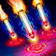
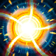

SKILL 01
Total Destruction
Orion fires six magic missiles at the enemies with the highest Health, dealing Magic Damage with each hit. The damage scales with Orion's Magic Attack. This can become a strong finishing tool when the enemy team has already been weakened.
Orion creates an explosion in the enemy back line, dealing area Magic Damage and slowing affected enemies for four seconds. Against enemies above level 120, the chance of applying the Slow is reduced.
Orion fires a magic missile at the nearest enemy, dealing Magic Damage and stunning the target for four seconds. Against enemies above level 120, the chance of applying the Stun is reduced.

SKILL 04 • PASSIVE
Full Charge
Every time Orion attacks, he receives additional Energy. This is the mechanic that allows him to cycle his Ultimate rapidly and repeatedly activate his team-wide Magic Penetration Weapon Artifact.